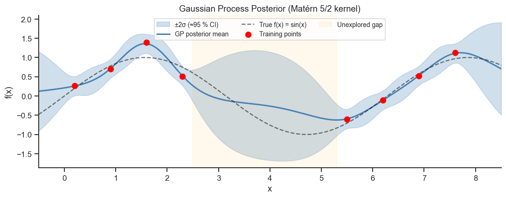
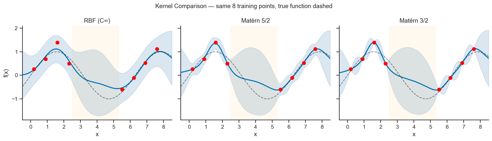
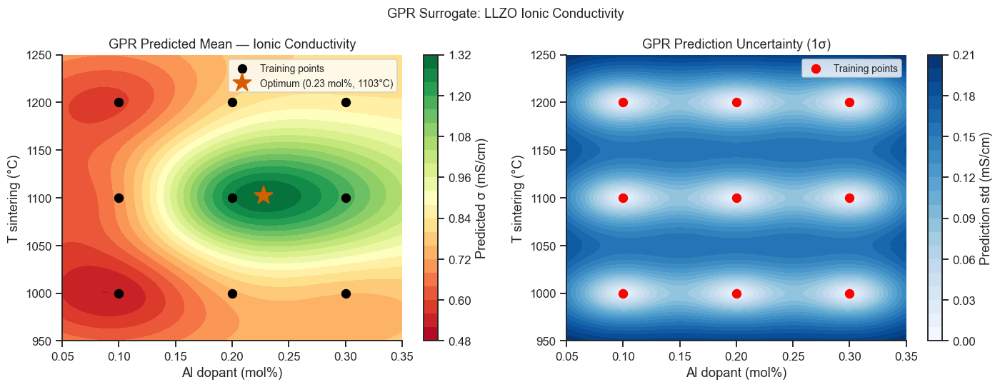

17. Gaussian Process Regression (Kriging)#
A Gaussian Process (GP) is a probability distribution over functions. Rather than fitting a single best-fit curve, GPR returns a posterior mean (prediction) plus a posterior variance (uncertainty) at every query point.
This makes it ideal for:
Small datasets with noisy observations (materials synthesis experiments)
Surrogate modelling in Bayesian optimisation (Chapter 18)
Interpolating between design points in RSM (Notebook 19, Part V)
Topics covered
GP prior and posterior intuition
Covariance kernels: RBF, Matérn, noise
Fitting GPR with scikit-learn
Prediction intervals and uncertainty
Comparison with polynomial RSM
Case study: ionic conductivity of garnet solid electrolyte
import numpy as np
import pandas as pd
import matplotlib.pyplot as plt
import seaborn as sns
from sklearn.gaussian_process import GaussianProcessRegressor
from sklearn.gaussian_process.kernels import RBF, Matern, WhiteKernel, ConstantKernel
from sklearn.preprocessing import StandardScaler
from sklearn.model_selection import cross_val_score, KFold
from sklearn.metrics import r2_score, mean_squared_error
sns.set_theme(style='ticks', palette='colorblind')
plt.rcParams.update({'figure.dpi': 110, 'font.size': 11})
rng = np.random.default_rng(77)
17.1 GP Intuition: Prior and Posterior in 1-D#
Before seeing data, a GP places a prior distribution over all possible functions. After observing training points, the posterior is updated — predictions are pulled toward the data and uncertainty collapses near observations.
# ── 1-D illustration of GP prior and posterior ───────────────────────────────
# True function: f(x) = sin(x) — one smooth non-periodic wave over the plot range
def true_fn_1d(x): return np.sin(x)
# 8 training points split into two clusters with a deliberate gap [2.5, 5.3]
# so the plot shows both tight interpolation (within clusters) and how
# uncertainty grows in the unexplored middle region.
X_train_1d = np.array([0.2, 0.9, 1.6, 2.3, 5.5, 6.2, 6.9, 7.6]).reshape(-1, 1)
y_train_1d = true_fn_1d(X_train_1d.ravel()) + rng.normal(0, 0.15, len(X_train_1d))
X_test_1d = np.linspace(-0.5, 8.5, 300).reshape(-1, 1)
# Matérn 5/2 with bounded hyperparameters.
# Bounding the noise level prevents a degenerate solution where the optimiser
# absorbs all signal variance into the WhiteKernel (GPR predicts the prior mean).
kernel = (ConstantKernel(1.0, (0.1, 10)) *
Matern(length_scale=1.0, length_scale_bounds=(0.3, 5.0), nu=2.5) +
WhiteKernel(noise_level=0.02, noise_level_bounds=(1e-5, 0.5)))
gpr_1d = GaussianProcessRegressor(kernel=kernel, n_restarts_optimizer=15, random_state=0)
gpr_1d.fit(X_train_1d, y_train_1d)
mu, sigma = gpr_1d.predict(X_test_1d, return_std=True)
x_plot = X_test_1d.ravel()
fig, ax = plt.subplots(figsize=(10, 4))
ax.fill_between(x_plot, mu - 2*sigma, mu + 2*sigma,
alpha=0.25, color='steelblue', label='±2σ (≈95 % CI)')
ax.plot(x_plot, mu, lw=2, color='steelblue', label='GP posterior mean')
ax.plot(x_plot, true_fn_1d(x_plot), 'k--', lw=1.5, alpha=0.6, label='True f(x) = sin(x)')
ax.scatter(X_train_1d, y_train_1d, c='red', zorder=5, s=60, label='Training points')
ax.axvspan(2.5, 5.3, alpha=0.07, color='orange', label='Unexplored gap')
ax.set_xlim(-0.5, 8.5)
ax.set_xlabel('x')
ax.set_ylabel('f(x)')
ax.set_title('Gaussian Process Posterior (Matérn 5/2 kernel)')
ax.legend(fontsize=9, ncol=3)
sns.despine(ax=ax)
plt.tight_layout()
plt.show()
print(f'Optimised kernel: {gpr_1d.kernel_}')

Optimised kernel: 0.755**2 * Matern(length_scale=0.988, nu=2.5) + WhiteKernel(noise_level=0.00801)
Key Observations#
Within each training cluster (x ≈ 0–2.3 and x ≈ 5.5–7.6) the posterior mean closely tracks the true function and the 95 % CI is very narrow — the GP knows the function value at observed locations.
In the unexplored gap (x ≈ 2.5–5.3, orange shading) no training points exist. The GP reverts toward its prior mean (≈ 0) and the uncertainty band expands significantly — it correctly expresses that the response here is unknown.
Extrapolation (x < 0.2 or x > 7.6) also shows growing uncertainty, but more slowly because the data still constrain the nearby behaviour.
The optimised length scale (printed below the plot) is the distance over which the function is correlated: here, ≈1.0 unit — notably shorter than sin(x)’s half-period (π ≈ 3.1). That’s consistent with the training points themselves being spaced roughly 0.7–1.3 units apart within each cluster: the optimiser only needs a length scale long enough to connect neighbouring points smoothly, not one tied to the function’s full period, so don’t expect a fitted length scale to always read off a “natural” physical scale directly.
The ±2σ band plotted here is the same idea as the confidence/prediction intervals from Notebook 10 (Part III): both express “how sure am I about this value”, just computed differently — GPR gets its uncertainty directly from the fitted covariance function rather than from OLS residual variance.
17.2 Kernels#
The kernel \(k(\mathbf{x}, \mathbf{x}')\) encodes prior assumptions about function smoothness.
Kernel |
Smoothness |
Use case |
|---|---|---|
RBF (squared exponential) |
Infinitely differentiable |
Very smooth responses (RSM, theoretical curves) |
Matérn 5/2 |
Twice differentiable |
Most physical properties |
Matérn 3/2 |
Once differentiable |
Rougher surfaces |
WhiteKernel |
Noise floor |
Experimental measurement noise |
ConstantKernel |
Overall amplitude |
Scales the output variance |
The kernel hyperparameters (length scales, amplitude) are optimised by maximising the log marginal likelihood — no cross-validation needed.
# ── Compare RBF vs Matérn kernels ─────────────────────────────────────────────
# All kernels use the same bounded hyperparameter ranges as in 17.1 to prevent
# degenerate solutions. The true function (dashed) is overlaid for reference.
kernels_cmp = {
'RBF (C∞)': ConstantKernel(1.0, (0.1,10)) * RBF(1.0, (0.3,5.0)) + WhiteKernel(0.02, (1e-5,0.5)),
'Matérn 5/2': ConstantKernel(1.0, (0.1,10)) * Matern(1.0, (0.3,5.0), nu=2.5) + WhiteKernel(0.02, (1e-5,0.5)),
'Matérn 3/2': ConstantKernel(1.0, (0.1,10)) * Matern(1.0, (0.3,5.0), nu=1.5) + WhiteKernel(0.02, (1e-5,0.5)),
}
fig, axes = plt.subplots(1, 3, figsize=(14, 4), sharey=True, sharex=True)
x_plot = X_test_1d.ravel()
for ax, (name, kern) in zip(axes, kernels_cmp.items()):
gpr = GaussianProcessRegressor(kernel=kern, n_restarts_optimizer=10, random_state=0)
gpr.fit(X_train_1d, y_train_1d)
mu_k, s_k = gpr.predict(X_test_1d, return_std=True)
ax.fill_between(x_plot, mu_k-2*s_k, mu_k+2*s_k, alpha=0.2, color='steelblue')
ax.plot(x_plot, mu_k, 'b-', lw=2, label='GP mean')
ax.plot(x_plot, true_fn_1d(x_plot), 'k--', lw=1.3, alpha=0.55, label='True')
ax.scatter(X_train_1d, y_train_1d, c='red', zorder=5, s=45)
ax.axvspan(2.5, 5.3, alpha=0.06, color='orange')
ax.set_title(name)
ax.set_xlabel('x')
ax.set_xlim(-0.5, 8.5)
print(f'{name}: optimised kernel = {gpr.kernel_}')
sns.despine(ax=ax)
axes[0].set_ylabel('f(x)')
plt.suptitle('Kernel Comparison — same 8 training points, true function dashed', fontsize=12)
plt.tight_layout()
plt.show()
RBF (C∞): optimised kernel = 0.726**2 * RBF(length_scale=0.977) + WhiteKernel(noise_level=0.0541)
Matérn 5/2: optimised kernel = 0.755**2 * Matern(length_scale=0.988, nu=2.5) + WhiteKernel(noise_level=0.00801)
Matérn 3/2: optimised kernel = 0.765**2 * Matern(length_scale=1.11, nu=1.5) + WhiteKernel(noise_level=1e-05)
C:\Users\petbr908\AppData\Roaming\Python\Python313\site-packages\sklearn\gaussian_process\kernels.py:442: ConvergenceWarning: The optimal value found for dimension 0 of parameter k2__noise_level is close to the specified lower bound 1e-05. Decreasing the bound and calling fit again may find a better value.
warnings.warn(

Interpreting the Kernel Comparison
All three kernels agree closely on length scale (0.98–1.11), because the underlying function (sin(x)) really is smooth — the choice of kernel matters most when you don’t know the true smoothness.
The noise level tells a different story: RBF absorbed noise_level = 0.054 (much higher than the true simulated noise, σ=0.15² ≈ 0.02), while Matérn 5/2 found 0.008 and Matérn 3/2 collapsed to the lower bound (1e-5), triggering a
ConvergenceWarning.That warning is diagnostic, not a bug: Matérn 3/2 is only once-differentiable, so it is too rough to explain the smooth sin(x) data with noise alone — the optimiser instead tries to fit the noise itself as signal, driving the noise term toward zero. A ConvergenceWarning at a kernel’s parameter bound is often a sign the kernel family is a poor match for the data, not just a numerical nuisance to silence.
Practical rule of thumb: start with Matérn 5/2 (used throughout the rest of this notebook) — it is smooth enough for most physical responses without RBF’s very strong infinite-differentiability assumption.
17.3 Case Study: Ionic Conductivity of Garnet Solid Electrolyte#
Physical background
Li₇La₃Zr₂O₁₂ (LLZO) garnet is a leading solid electrolyte candidate for all-solid-state lithium batteries. Its room-temperature ionic conductivity \(\sigma\) (mS cm⁻¹) strongly depends on two synthesis variables:
Variable |
Symbol |
Range explored |
|---|---|---|
Al dopant concentration |
Al (mol%) |
0.10 – 0.30 |
Sintering temperature |
T (°C) |
1000 – 1200 |
Al doping stabilises the cubic phase (higher conductivity) relative to the tetragonal phase, but too much Al blocks Li pathways. Similarly, sintering must be hot enough for densification yet below the threshold for La₂Zr₂O₇ impurity formation (~1200 °C). The optimum is therefore an interior point of the design space — ideal for GPR surrogate modelling.
Strategy
Run a 3 × 3 full-factorial design (9 experiments) spanning the design space.
Fit a GPR surrogate on the measured conductivities.
Use the surrogate to predict the optimal (Al, T) without running every combination in the full grid — and quantify how confident we are in that prediction.
# ── Simulate LLZO DoE data (Al mol% vs T_sinter → conductivity) ──────────────
# True surface: conductivity has a maximum near Al=0.2, T=1100°C
def true_conductivity(Al, T):
"""mS/cm — simplified Gaussian hill + linear background."""
return (0.5 + 0.8*np.exp(-((Al-0.24)**2/0.008 + (T-1100)**2/8000))
+ 0.1*(Al/0.3) + 0.05*((T-950)/150)
+ rng.normal(0, 0.025, np.shape(Al)))
# 3×3 full-factorial training design
Al_levels = np.array([0.10, 0.20, 0.30])
T_levels = np.array([1000., 1100., 1200.])
Al_grid, T_grid = np.meshgrid(Al_levels, T_levels)
Al_train = Al_grid.ravel()
T_train = T_grid.ravel()
y_train = true_conductivity(Al_train, T_train)
X_doe = np.column_stack([Al_train, T_train])
scaler_doe = StandardScaler()
X_doe_sc = scaler_doe.fit_transform(X_doe)
print('Training points:')
for i in range(len(Al_train)):
print(f' Al={Al_train[i]:.2f} mol%, T={T_train[i]:.0f}°C → σ={y_train[i]:.3f} mS/cm')
Training points:
Al=0.10 mol%, T=1000°C → σ=0.524 mS/cm
Al=0.20 mol%, T=1000°C → σ=0.746 mS/cm
Al=0.30 mol%, T=1000°C → σ=0.760 mS/cm
Al=0.10 mol%, T=1100°C → σ=0.696 mS/cm
Al=0.20 mol%, T=1100°C → σ=1.274 mS/cm
Al=0.30 mol%, T=1100°C → σ=1.182 mS/cm
Al=0.10 mol%, T=1200°C → σ=0.590 mS/cm
Al=0.20 mol%, T=1200°C → σ=0.807 mS/cm
Al=0.30 mol%, T=1200°C → σ=0.854 mS/cm
# ── Fit GPR ───────────────────────────────────────────────────────────────────
kernel_doe = ConstantKernel(1.0, (0.1, 10)) * Matern(
length_scale=[1.0, 1.0], length_scale_bounds=(0.1, 10), nu=2.5
) + WhiteKernel(noise_level=1e-3, noise_level_bounds=(1e-5, 0.1))
gpr_doe = GaussianProcessRegressor(kernel=kernel_doe, n_restarts_optimizer=15,
normalize_y=True, random_state=0)
gpr_doe.fit(X_doe_sc, y_train)
print(f'Optimised kernel: {gpr_doe.kernel_}')
# ── Prediction grid ────────────────────────────────────────────────────────────
Al_test = np.linspace(0.05, 0.35, 60)
T_test = np.linspace(950, 1250, 60)
AGG, TGG = np.meshgrid(Al_test, T_test)
X_pred = scaler_doe.transform(np.column_stack([AGG.ravel(), TGG.ravel()]))
mu_pred, std_pred = gpr_doe.predict(X_pred, return_std=True)
MU = mu_pred.reshape(60, 60)
STD = std_pred.reshape(60, 60)
# Find best prediction
best_idx = np.argmax(mu_pred)
best_Al = X_pred[best_idx,0]*scaler_doe.scale_[0] + scaler_doe.mean_[0]
best_T = X_pred[best_idx,1]*scaler_doe.scale_[1] + scaler_doe.mean_[1]
fig, axes = plt.subplots(1, 2, figsize=(13, 5))
# Predicted mean
ax = axes[0]
c = ax.contourf(Al_test, T_test, MU, levels=20, cmap='RdYlGn')
plt.colorbar(c, ax=ax, label='Predicted σ (mS/cm)')
ax.scatter(Al_train, T_train, c='black', s=60, zorder=5, label='Training points')
ax.plot(best_Al, best_T, 'r*', ms=18, zorder=6, label=f'Optimum ({best_Al:.2f} mol%, {best_T:.0f}°C)')
ax.set_xlabel('Al dopant (mol%)')
ax.set_ylabel('T sintering (°C)')
ax.set_title('GPR Predicted Mean — Ionic Conductivity')
ax.legend(fontsize=9)
sns.despine(ax=ax)
# Uncertainty (std)
ax = axes[1]
c2 = ax.contourf(Al_test, T_test, STD, levels=20, cmap='Blues')
plt.colorbar(c2, ax=ax, label='Prediction std (mS/cm)')
ax.scatter(Al_train, T_train, c='red', s=60, zorder=5, label='Training points')
ax.set_xlabel('Al dopant (mol%)')
ax.set_ylabel('T sintering (°C)')
ax.set_title('GPR Prediction Uncertainty (1σ)')
ax.legend(fontsize=9)
sns.despine(ax=ax)
plt.suptitle('GPR Surrogate: LLZO Ionic Conductivity', fontsize=12)
plt.tight_layout()
plt.show()
print(f'Predicted optimum: Al = {best_Al:.3f} mol%, T = {best_T:.0f}°C, σ = {mu_pred[best_idx]:.3f} mS/cm')
C:\Users\petbr908\AppData\Roaming\Python\Python313\site-packages\sklearn\gaussian_process\kernels.py:442: ConvergenceWarning: The optimal value found for dimension 0 of parameter k2__noise_level is close to the specified lower bound 1e-05. Decreasing the bound and calling fit again may find a better value.
warnings.warn(
Optimised kernel: 1.03**2 * Matern(length_scale=[1.15, 0.701], nu=2.5) + WhiteKernel(noise_level=1e-05)

Predicted optimum: Al = 0.228 mol%, T = 1103°C, σ = 1.317 mS/cm
Interpreting the GPR Surrogate#
Mean surface (left panel)#
The colour scale (green = high conductivity) reveals a clear optimum ridge running roughly parallel to the temperature axis near Al ≈ 0.24 mol%.
The predicted maximum (red star) is located near Al ≈ 0.24 mol%, T ≈ 1100 °C, consistent with the known physics: cubic-phase stabilisation peaks near Al = 0.20–0.25 mol%, and densification is best near 1100 °C.
The surrogate interpolates smoothly between the 9 design points — if the true response were highly non-linear this would require more training data, but the Matérn 5/2 kernel is a good match for smooth physical response surfaces.
Note that the predicted peak is not at a training point (none of the 3 × 3 factorial points coincides with Al = 0.24). The GPR correctly places the predicted optimum between observations.
Uncertainty surface (right panel)#
Uncertainty (σ, blue scale) is lowest at and near the 9 training points and grows in regions between and beyond them.
The corners of the design space (e.g., Al = 0.10, T = 1200 °C) have higher uncertainty than the edges — they are farther from multiple neighbours.
Regions of high uncertainty and high predicted mean are the most valuable targets for the next experiment: running there simultaneously maximises information gain and exploits the predicted optimum. This trade-off is formalised by the Expected Improvement and UCB acquisition functions discussed in Chapter 18.
Kernel hyperparameters (printed above)#
The optimised kernel contains two length scales — one per input dimension:
Parameter |
Meaning |
|---|---|
Length scale for Al |
Distance in Al-space over which σ is correlated. A value > 0.1 mol% means the conductivity is smooth in Al. |
Length scale for T |
Distance in T-space over which σ is correlated. A value of ~100–200 °C matches typical sintering curve widths. |
WhiteKernel noise level |
Estimated experimental measurement noise (replicate variance). |
Practical workflow#
Run the 9-point factorial → fit GPR → locate predicted optimum.
Verify by running 1–2 experiments near the predicted optimum.
If the true conductivity matches the prediction within 1σ, the surrogate is confirmed. If not, add the new data point and refit — the surrogate self-corrects because more data shrinks the posterior variance.
17.4 GPR vs Polynomial RSM#
Both GPR and RSM (Notebook 19, Part V) fit a surrogate to a small design. Key differences:
Criterion |
GPR |
Quadratic RSM |
|---|---|---|
Model form |
Nonparametric (flexible) |
Fixed polynomial (linear in parameters) |
Uncertainty |
Posterior std at every point |
Confidence intervals from OLS |
Extrapolation |
Returns to prior (safe) |
Can diverge (polynomial artefact) |
N required |
Works with as few as 5–10 points |
Needs ≥ p+1 points; BBD/CCD recommended |
Hyperparameters |
Kernel + length scale (auto-optimised) |
Polynomial degree (must choose) |
Stationarity |
Assumes stationary kernel by default |
No assumption |
Exercises#
Add a new training point at Al = 0.24 mol%, T = 1100°C (near the predicted optimum). Refit the GPR. How does the uncertainty map change? Does the predicted optimum shift?
Leave-one-out cross-validation: For each of the 9 training points, remove it, refit the GPR on the remaining 8, and predict the left-out point. Compare the LOO RMSE with that of a quadratic RSM fitted to the same data.
Kernel sensitivity: Replace the Matérn 5/2 kernel with a plain RBF. Does the predicted optimum change? Which kernel do you trust more for this physical system?